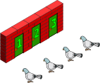

<!doctype html>
<html lang="en">
  <head>
    <meta charset="utf-8">

    <title>Introduction to Blockchain Security Practices</title>

    <meta name="author" content="Doug Hoyte">

    <meta name="apple-mobile-web-app-capable" content="yes" />
    <meta name="apple-mobile-web-app-status-bar-style" content="black-translucent" />

    <meta name="viewport" content="width=device-width, initial-scale=1.0, maximum-scale=1.0, user-scalable=no, minimal-ui">

    <link rel="stylesheet" href="../reveal.js/css/reveal.css">
    <link rel="stylesheet" href="../reveal.js/css/theme/black.css" id="theme">

    <!-- Code syntax highlighting -->
    <link rel="stylesheet" href="../reveal.js/lib/css/zenburn.css">

    <!-- Printing and PDF exports -->
    <script>
      var link = document.createElement( 'link' );
      link.rel = 'stylesheet';
      link.type = 'text/css';
      link.href = window.location.search.match( /print-pdf/gi ) ? '../reveal.js/css/print/pdf.css' : '../reveal.js/css/print/paper.css';
      document.getElementsByTagName( 'head' )[0].appendChild( link );
    </script>

    <!--[if lt IE 9]>
    <script src="../reveal.js/lib/js/html5shiv.js"></script>
    <![endif]-->

    <style>
      .reveal .slides h1, .reveal .slides h2, .reveal .slides h3 {
        text-transform: none;
      }

      .two-column {
        display: flex;
        flex-wrap: wrap;
      }

      .two-column em {
        margin: 20px;
      }

      .reveal .big-and-bold {
        font-weight: bold;
        font-size: 135%;
      }

      .reveal .shrunk-a-bit {
        font-size: 90%;
      }

      .reveal .shrunk-a-bit pre {
        width: 100%;
      }

      .reveal pre {
        width: 100%;
      }

      .reveal .highlight {
        color: yellow;
        font-weight: bold;
      }

      .reveal .highlightRed {
        color: red;
        font-weight: bold;
      }

      .reveal .highlightGreen {
        color: green;
        font-weight: bold;
      }
    </style>
  </head>

  <body>
    <div class="reveal">
      <div class="slides">

<!------------------------------------------------------->


<section data-markdown><script type="text/template">

## Introduction to Blockchain Security Practices

### Review Session

*Doug Hoyte, March 2019*

[https://is.gd/blockchainsec](https://is.gd/blockchainsec)

</script></section>


<section data-markdown><script type="text/template">

## Randomness

* Without randomness, cryptography is impossible
  * We need unpredictability for secret keys, etc

</script></section>


<section data-markdown><script type="text/template">

## Generators

* True Random Number Generators (RNGs) use things like thermal noise
* Psuedo-RNGs (PRNGs)
  * Start with a seed and return a deterministic stream of values
* Cryptographically Secure-PRNGs
  * Can't predict future or past values without knowing the seed

</script></section>


<section data-markdown><script type="text/template">

## Randomness mistakes

* Using bad PRNGs
* Using too small seeds
  * Use at least 128 bits
* Introducing bias
  * For example "mod bias"

</script></section>


<section data-markdown><script type="text/template">

## Principle: Computational Infeasability

* Cryptography needs (very) big numbers
* We make the numbers so big it would take forever to try them all

</script></section>


<section data-markdown><script type="text/template">

## Hash functions

* Take unlimited size input, return fixed size output
* "One-way function"
  * Hard to find a message (a "pre-image") that hashes to a given value
    * But make sure your pre-image domain is large!
* Collision resistance
  * Hard to find any two messages that hash to same value

</script></section>


<section data-markdown><script type="text/template">

## Pigeon-hole principle



</script></section>


<section data-markdown><script type="text/template">

## Kerckhoffs's principle

* Assume that the attacked knows everything about your system except the secret key
* "Security through obscurity" doesn't work

</script></section>


<section data-markdown><script type="text/template">

## Signatures

* An ethereum account has 3 parts:
   * Private key (32 bytes)
   * Public key, computed from private key (64 bytes)
   * Ethereum address, computed from public key (20 bytes)
* The private key lets you prove you created a message
  * Public key lets anyone verify that

</script></section>


<section data-markdown><script type="text/template">

## Consensus

* Point of a blockchain is to have a global database
  * Everyone agrees on the same content
* All changes have to be deterministic

</script></section>


<section data-markdown><script type="text/template">

## Transactions

* Updates to the DB are called transactions
  * Need to prevent replay attacks (where same transaction used multiple times)
  * Bitcoin uses Unspent Transaction Output (UTXO) model
  * Ethereum uses Accounts and nonces (sequence IDs) model
    * <span class="highlightGreen">N</span><span class="highlight">once</span> is a <span class="highlightGreen">N</span>umber only used <span class="highlight">once</span>

</script></section>


<section data-markdown><script type="text/template">

## EOAs and contracts

* Ethereum supports 2 types of accounts
  * Externally Owned Accounts (EOAs)
    * Normal private/public keys
  * Contracts
    * Do not have private/public keys
    * Run some code whenever they receive a transaction

</script></section>


<section data-markdown><script type="text/template">

## Gas

* In order to prevent transactions from using too many resources, they are charged *gas fees*
* You set a gas price when you create a transaction
* Your transaction uses a certain amount of gas when it runs
* You are charged gas used times gas price

</script></section>


<section data-markdown><script type="text/template">

## Blocks

* Collections of transactions created by miners
  * Miners choose which transactions to put in
* Each block is linked to the previous by embedding its hash
  * This "chain" of blocks represents the history of updates to the DB

</script></section>


<section data-markdown><script type="text/template">

## Wallets

* Software programs that manage user's private keys
  * Example: metamask
* Often support "mnemonic" back-ups
  * 12 words that represent all your private keys

</script></section>


<section data-markdown><script type="text/template">

## Nodes

* Nodes are programs that implement the blockchain network
  * Pass transactions and blocks between eachother
  * Used to manage private keys, but modern designs use separate wallets
  * Usually expose JSON-RPC interface for dApps and wallets to use

</script></section>


<section data-markdown><script type="text/template">

## Web3/dapps

* Decentralized applications
  * Talk to nodes over JSON-RPC
  * But usually use higher level libraries like web3.js or ethers.js

</script></section>


<section data-markdown><script type="text/template">

## Solidity

* Programming language used to create smart contracts
* Compiles to "bin" (binary data) and "abi" (application binary interface)
  * "bin" is deployed on blockchain
  * "abi" is used by your dApp to know how to talk to the contract

</script></section>


<section data-markdown><script type="text/template">

## Functions

* Contracts contain functions
  * Params with types and names, ie: `uint256 id`
  * Access restrictions control who can call them: public, private, external, internal
  * Storage resitrictions control what the function can do: pure, view, (none)

</script></section>


<section data-markdown><script type="text/template">

## Overflows


</script></section>


<section data-markdown><script type="text/template">

## require and assert

* `require` is for testing conditions, like sufficient balance
<pre class="hljs js">
require(balance[msg.sender] >= amount, "not enough balance");
</pre>
* `assert` is for things you think should never happen
  * Used by tools to analyze your program

</script></section>


<section data-markdown><script type="text/template">

## Storage

* Contracts have a memory called storage
* Persists (stays around) between transactions
* Nothing in storage is private -- nodes can always read it
* Only if a transaction succeeds are all the changes written
* Writing to storage is expensive (uses lots of gas)

</script></section>


<section data-markdown><script type="text/template">

## Access control

* `msg.sender` is who called the function
* Contracts can have `constructor` which is code run when the contract is created
  * Often `msg.sender` is saved as the "owner" of the contract
* Modifiers like `onlyOwner` can protect who can call a function

</script></section>


<section data-markdown><script type="text/template">

## Value transfer

* All value transfers are transactions
  * Functions that receive value should be marked `payable`
  * If not calling any function, runs the fallback function

</script></section>


<section data-markdown><script type="text/template">

## Collections

* `mapping` creates a key-value lookup table
* Arrays are sequentially indexed
  * Try to use mappings instead of arrays if possible
* `struct`s group together other types into a new type

</script></section>


<section data-markdown><script type="text/template">

## Threat models

* If contract writer is trusted, you only need to worry about accidental bugs
* If contract writer not trusted, you also need to worry about hidden backdoors
  * **Plausible deniability** - Where a bug cannot be proved to be a hidden backdoor

</script></section>


<section data-markdown><script type="text/template">

## Contract interactions

* Contracts can call each other
  * Used for many reasons, including contract upgrades
    * Upgrades are good because bugs can be fixed, but bad because owner could add a backdoor
* Even when you send ETH, you are calling a function
  * Can choose how much gas to forward
* Contracts know how to call each-other using *interfaces*

</script></section>


<section data-markdown><script type="text/template">

## Withdrawal pattern

* Because any transfer could fail (if contract's fallback throws an error), prefer using this pattern
  * Lets users withdraw their balance separately so they can't interfere with other operations

</script></section>


<section data-markdown><script type="text/template">

## Single use contracts

* Contracts that call `selfdestruct` in constructor
  * Useful for performing multiple operations atomically
  * Or for condition checking before/after an operation
    * Also useful for attacks, like predicting "random" numbers

</script></section>


<section data-markdown><script type="text/template">

## On-chain randomness

* Not easy because blockchain is deterministic, and influencable by users and miners
* Best solution is "commit-reveal"
  * Users commit to hashes of secrets in first phase
  * Then reveal the secrets in second phase
  * The secrets are then combined to make the random value

</script></section>


<section data-markdown><script type="text/template">

## Re-entrancy

* When a contract calls itself
  * Usually by calling an attacker contract which calls back into the contract
* The root problem is global variables
  * If contract has storage in an inconsistent state and makes a call
  * Dangerous if contract hasn't **preserved invariants**
* "The DAO" was famously hacked for millions using re-entrancy

</script></section>


<section data-markdown><script type="text/template">

## Re-entrancy protections

* Limit amount of gas forwarded
  * `transfer` and `send` limit to 2,300 gas
* Re-entrancy guard
  * Effective, but expensive
* Preserve invariants
  * Best practice
  * Checks-Effects-Interactions pattern helps with this

</script></section>


<section data-markdown><script type="text/template">

## Input handling

* Cross-site scripting (XSS)
  * An attacker's value is inserted into an HTML page, and malicious javascript code is run
* SQL injection
  * An attacker's value is inserted into a SQL statement, and malicious SQL code is run
* Buffer over/under-flow
  * A value that is too long or too short causes corruption in surrounding data

</script></section>


<section data-markdown><script type="text/template">

## Input handling protection

* **Trust nothing** that comes from users: They may be attackers
* **Sanitize input**: Remove characters you aren't expecting, or throw an error
* **Escape output**: When you insert a user-provided value into a document or program, make sure it can't be interpreted as commands

</script></section>


<section data-markdown><script type="text/template">

## Front-running

* Because transactions that haven't been mined yet exist in nodes "mempools", everyone can see them
* If there is valuable information in those transactions, attackers can create their own transactions based on it
* By setting high gas price, they can ensure their transaction is mined before yours
* Possible solution: commit-reveal scheme

</script></section>


<section data-markdown><script type="text/template">

## Off-chain designs

* Because adding transactions to the blockchain is expensive, best to do things off-chain if possible
* Off-chain orderbooks are lists of offers to trade that are published off-chain
* Orders need to be signed to verify the creator, just like transactions

</script></section>


<section data-markdown><script type="text/template">

## ecrecover

* In solidity, signatures can be verified with `ecrecover`
* This takes a hash of the message and the signature, and "recovers" the address that signed the message
* `"\x19Ethereum Signed Message"` prefix is added by wallets so users can't accidentally sign transactions

</script></section>


<section data-markdown><script type="text/template">

## Off-chain signature issues

* Replay attacks
  * There is nothing stopping a signed message from being used multiple times, so you need to protect against this
* Cross-contract attacks
  * A signed message could be used unexpectedly on multiple contracts, unless you protect against this

</script></section>


<section data-markdown><script type="text/template">

## End of review

* Questions?

</script></section>


<section data-markdown><script type="text/template">

## 30 minute break

</script></section>


<section data-markdown><script type="text/template">

## Final exam

</script></section>


<!------------------------------------------------------->


      </div>

    </div>

    <script src="../reveal.js/lib/js/head.min.js"></script>
    <script src="../reveal.js/js/reveal.js"></script>

    <script>

      // Full list of configuration options available at:
      // https://github.com/hakimel/reveal.js#configuration
      Reveal.initialize({
        controls: true,
        progress: true,
        history: true,
        center: true,

        transition: 'none', // none/fade/slide/convex/concave/zoom

	math: {
          mathjax: '../lib/MathJax/MathJax.js',
          config: 'TeX-AMS_SVG-full',
	},

        // Optional reveal.js plugins
        dependencies: [
          { src: '../reveal.js/plugin/markdown/marked.js', condition: function() { return !!document.querySelector( '[data-markdown]' ); } },
          { src: '../reveal.js/plugin/markdown/markdown.js', condition: function() { return !!document.querySelector( '[data-markdown]' ); } },
          { src: '../reveal.js/plugin/highlight/highlight.js', async: true, callback: function() { hljs.initHighlightingOnLoad(); } },
          { src: '../reveal.js/plugin/math/math.js', async: true },
        ]
      });

    </script>

  </body>
</html>
